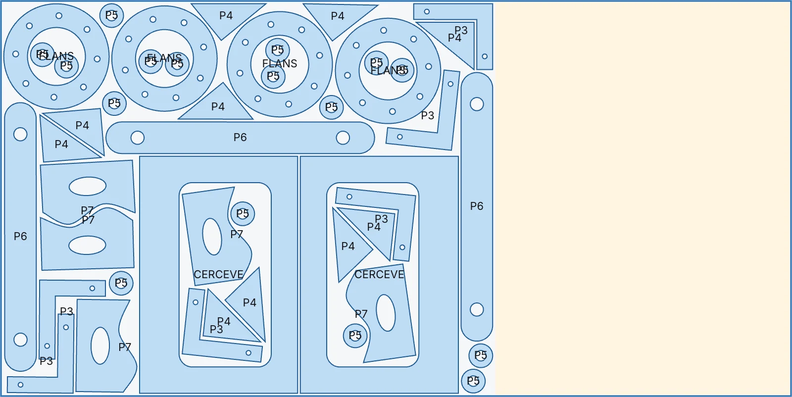

Free · Open source · Nothing to install
Nest parts onto sheets with the least scrap
Drop your DXF or DWG drawing. Nestio separates the parts, uses the holes inside them, keeps the sheet count down and gives you a cut-ready DXF.
Your file is never sent to a server. The work is done by this computer's processor.
Inside Nestio
From drawing to cutting in three screens
These screens are taken from the tool itself. The sample drawing is synthetic; the “Try the sample drawing” button gives you the same result.
1 · Read
It separates the parts for you
Lines, arcs, splines, polylines and blocks become closed contours; nested contours become holes. Identical parts are counted, and sheets are recognised by their layer name.
- DXF and DWGDWG is read in the browser with LibreDWG; no conversion needed.
- 3D wireframe platesPlate parts are flattened; parts of a different thickness are flagged.
- Easy correctionsEach tile's menu makes it a part, a sheet or ignored.


2 · Set up
You choose the sheets, the gap and the time
Use sheets of different sizes together, cap their quantity or leave it open. Gap between parts and edge margin are set in millimetres; 0 is allowed.
- Three search timesFast 15 s, Balanced 45 s, Thorough 2 min (per sheet).
- Parts inside holesSmall parts go into the openings of large ones, keeping the gap.
- Emptying the last sheetThe remnant stays at the end of the last sheet as one solid piece.


How it works
- 1
Separates the parts
Closed contours and holes are found; identical parts are counted.
- 2
Uses the holes
Small parts that fit into openings are found with an FFT scan and confirmed with exact geometry.
- 3
Fills the sheets
The open-source sparrow algorithm packs parts at free rotation angles. One attempt runs per processor core and the best one wins.
- 4
Checks and writes
An independent check measures the edge margin and every gap; the result downloads as a layered DXF.
Output
A cut-ready DXF, layer by layer
The layout downloads as a DXF your CAM software opens directly. Sheet outline, cut contours, part labels and the remnant are on separate layers.
PLAKASheet outlineKESIMPart and hole contoursETIKETPart namesARTIKThe single remnant at the end of the sheet

Why Nestio
Free, no limits
No payment, no sign-up, no cap on parts or sheets. No watermark either.
Your drawing stays with you
Everything runs in the browser with WebAssembly. The page loads only its own files; there are no cookies or trackers.
Open source
All the code is on GitHub under GPL-3.0. Run it on your own server or from the command line if you like.
Nothing to install
A current browser is enough. On a multi-core computer the same job is tried in parallel.
Frequently asked questions
Is my drawing sent to a server?
No. The file is read and nested in your browser; after the page opens, the only network requests are the tool's own files (WASM, fonts). You can confirm this in the Network tab of your browser's developer tools.
Can it write DWG too?
DWG is read; the output is DXF. There is no open-source library yet that writes DWG in the browser, and every CAM program opens DXF.
Which sheet sizes can I use?
Add as many sizes as you need; give each a quantity or leave it unlimited. Rectangles on layers such as PLATE, SHEET, PLAKA or LEVHA are recognised as sheets automatically.
Does it mirror parts?
No. Parts rotate freely but are never mirrored, so directional parts and coated sheets stay safe.
How do I know the result is right?
Every result goes through a check that is independent of the nesting algorithm: is each part inside the edge margin, is every gap at least the one you asked for, and is no part mirrored (parts are only rotated, never flipped over on coated or patterned sheet)? The result screen says “Check passed” or lists the problems found.
Why is it free?
Nestio is one of Talivio's open-source tools. There is no paid version, no limited tier and no advertising. Report bugs and ideas on GitHub.